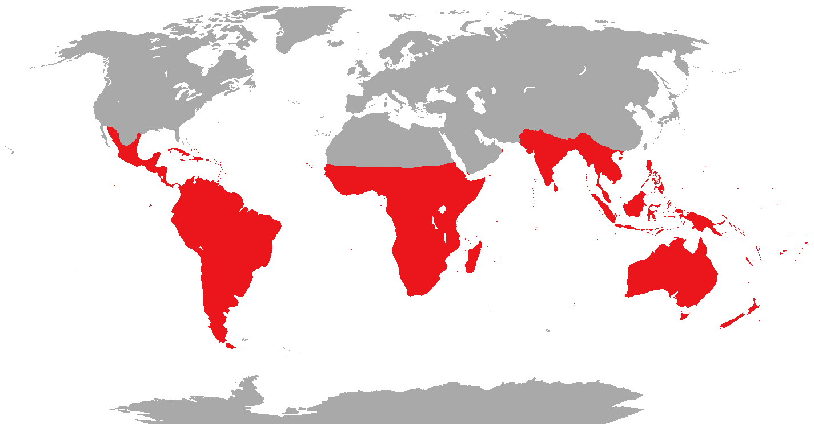
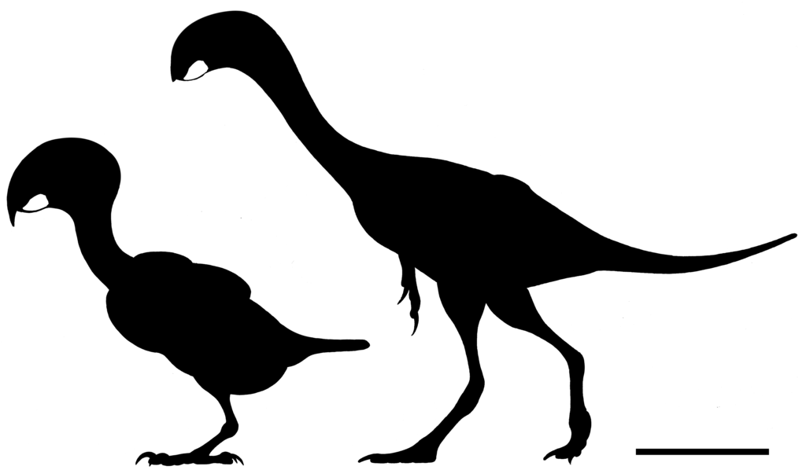
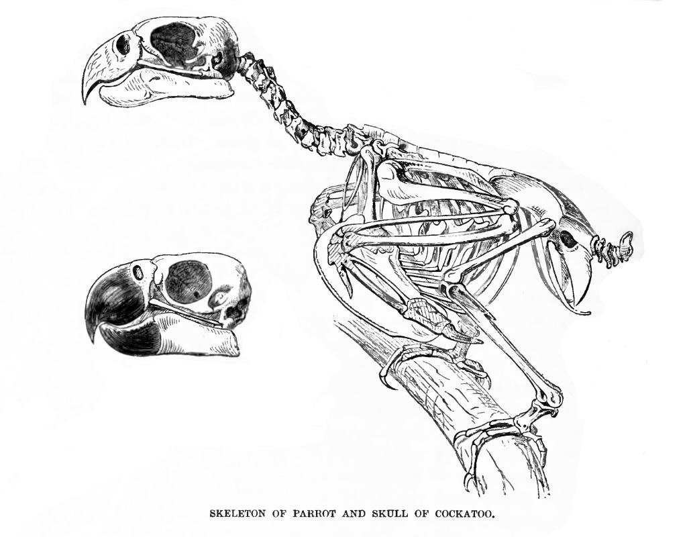
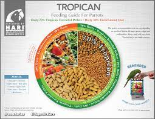

Parrots, also known as psittacines (/ˈsɪtəsaɪnz/),[1][2] are birds of the roughly 398 species[3] in 92 genera comprising the order Psittaciformes (/ˈsɪtəsɪfɔːrmiːz/), found mostly in tropical and subtropical regions. The order is subdivided into three superfamilies: the Psittacoidea ("true" parrots), the Cacatuoidea (cockatoos), and the Strigopoidea (New Zealand parrots). One-third of all parrot species are threatened by extinction, with higher aggregate extinction risk (IUCN Red List Index) than any other comparable bird group.[4] Parrots have a generally pantropical distribution with several species inhabiting temperate regions in the Southern Hemisphere, as well. The greatest diversity of parrots is in South America[5] and Australasia.[6]
Characteristic features of parrots include a strong, curved bill, an upright stance, strong legs, and clawed zygodactyl feet. Many parrots are vividly coloured, and some are multi-coloured. Most parrots exhibit little or no sexual dimorphism in the visual spectrum. They form the most variably sized bird order in terms of length.
The most important components of most parrots' diets are seeds, nuts, fruit, buds, and other plant material. A few species sometimes eat animals and carrion, while the lories and lorikeets are specialised for feeding on floral nectar and soft fruits. Almost all parrots nest in tree hollows (or nest boxes in captivity), and lay white eggs from which hatch altricial (helpless) young.
Parrots, along with ravens, crows, jays, and magpies, are among the most intelligent birds, and the ability of some species to imitate human speech enhances their popularity as pets. Trapping wild parrots for the pet trade, as well as hunting, habitat loss, and competition from invasive species, has diminished wild populations, with parrots being subjected to more exploitation than any other group of birds. As of 2021, about 50 million parrots (half of all parrots) live in captivity, with the vast majority of these living as pets in people's homes.[7] Measures taken to conserve the habitats of some high-profile charismatic species have also protected many of the less charismatic species living in the same ecosystems.Parrots are the only creatures that display true tripedalism, using their necks and beaks as limbs with propulsive forces equal to or greater than those forces generated by the forelimbs of primates when climbing vertical surfaces. They can travel with cyclical tripedal gaits when climbing.[8]
Psittaciform diversity in South America and Australasia suggests that the order may have evolved in Gondwana, centred in Australasia.[9] The scarcity of parrots in the fossil record, however, presents difficulties in confirming the hypothesis. There is currently a higher amount of fossil remains from the northern hemisphere in the early Cenozoic.[10] Molecular studies suggest that parrots evolved approximately 59 million years ago (Mya) (range 66–51 Mya) in Gondwana. The three major clades of Neotropical parrots originated about 50 Mya (range 57–41 Mya).
A single 15 mm (0.6 in) fragment from a large lower bill (UCMP 143274), found in deposits from the Lance Creek Formation in Niobrara County, Wyoming, had been thought to be the oldest parrot fossil and is presumed to have originated from the Late Cretaceous period, which makes it about 70 million years old.[12] However, other studies suggest that this fossil is not from a bird, but from a caenagnathid oviraptorosaur (a non-avian dinosaur with a birdlike beak), as several details of the fossil used to support its identity as a parrot are not actually exclusive to parrots, and it is dissimilar to the earliest-known unequivocal parrot fossils.
It is generally assumed that the Psittaciformes were present during the Cretaceous–Paleogene extinction event (K-Pg extinction), 66 mya. They were probably generalised arboreal birds, and did not have the specialised crushing bills of modern species.[10][15] Genomic analysis provides strong evidence that parrots are the sister group of passerines, forming the clade Psittacopasserae, which is the sister group of the falcons.
The first uncontroversial parrot fossils date to tropical Eocene Europe around 50 mya. Initially, a neoavian named Mopsitta tanta, uncovered in Denmark's Early Eocene Fur Formation and dated to 54 mya, was assigned to the Psittaciformes. However, the rather nondescript bone is not unequivocally psittaciform, and it may rather belong to the ibis genus Rhynchaeites, whose fossil legs were found in the same deposits.
Several fairly complete skeletons of parrot-like birds have been found in England and Germany.[18] These are probably not transitional fossils between ancestral and modern parrots, but rather lineages that evolved parallel to true parrots and cockatoos
The name 'Psittaciformes' comes from the ancient Greek for parrot, ψιττακός ('Psittacus'), whose origin is unclear. Ctesias (5th century BCE) recorded the name Psittacus after the Indian name for a bird, most likely a parakeet (now placed in the genus Psittacula). Pliny the Elder (23/24–79 CE) in his Natural History (book 10, chapter 58) noted that the Indians called the bird as "siptaces"; however, no matching Indian name has been traced.
The Psittaciformes comprise three main lineages: Strigopoidea, Psittacoidea and Cacatuoidea.[27] The Strigopoidea were considered part of the Psittacoidea, but the former is now placed at the base of the parrot tree next to the remaining members of the Psittacoidea, as well as all members of the Cacatuoidea.[9][25][26] The Cacatuoidea are quite distinct, having a movable head crest, a different arrangement of the carotid arteries, a gall bladder, differences in the skull bones, and lack the Dyck texture feathers that—in the Psittacidae—scatter light to produce the vibrant colours of so many parrots. Colourful feathers with high levels of psittacofulvin resist the feather-degrading bacterium Bacillus licheniformis better than white ones.[28] Lorikeets were previously regarded as a third family, Loriidae,[29]: 45 but are now considered a tribe (Loriini) within the subfamily Loriinae, family Psittaculidae. The two other tribes in the subfamily are the closely related fig parrots (two genera in the tribe Cyclopsittini) and budgerigar (tribe Melopsittacini)
Living species range in size from the buff-faced pygmy parrot, at under 10 g (0.4 oz) in weight and 8 cm (3.1 in) in length,[29]: 149 to the hyacinth macaw, at 1 m (3.3 ft) in length,[35] and the kakapo, at 4.0 kg (8.8 lb) in weight.[36] Among the superfamilies, the three extant Strigopoidea species are all large parrots, and the cockatoos tend to be large birds, as well. The Psittacoidea parrots are far more variable, ranging the full spectrum of sizes shown by the family.
The most obvious physical characteristic is the strong, curved, broad bill. The upper mandible is prominent, curves downward, and comes to a point. It is not fused to the skull, which allows it to move independently, and contributes to the tremendous biting pressure the birds are able to exert. A large macaw, for example, has a bite force of 35 kg/cm2 (500 lb/sq in), close to that of a large dog.[37] The lower mandible is shorter, with a sharp, upward-facing cutting edge, which moves against the flat portion of the upper mandible in an anvil-like fashion. Touch receptors occur along the inner edges of the keratinised bill, which are collectively known as the "bill tip organ", allowing for highly dexterous manipulations. Seed-eating parrots have a strong tongue (containing similar touch receptors to those in the bill tip organ), which helps to manipulate seeds or position nuts in the bill so that the mandibles can apply an appropriate cracking force. The head is large, with eyes positioned high and laterally in the skull, so the visual field of parrots is unlike any other birds. Without turning its head, a parrot can see from just below its bill tip, all above its head, and quite far behind its head. Parrots also have quite a wide frontal binocular field for a bird, although this is nowhere near as large as primate binocular visual fields.[38] Unlike humans, the vision of parrots is also sensitive to ultraviolet light.
Parrots have strong zygodactyl feet (two toes facing forward and two back) with sharp, elongated claws, which are used for climbing and swinging. Most species are capable of using their feet to manipulate food and other objects with a high degree of dexterity, in a similar manner to a human using their hands. A study conducted with Australian parrots has demonstrated that they exhibit "handedness", a distinct preference with regards to the foot used to pick up food, with adult parrots being almost exclusively "left-footed" or "right-footed", and with the prevalence of each preference within the population varying by species.
Parrots are found on all tropical and subtropical continents and regions including Australia and Oceania,[6] South Asia, Southeast Asia, Central America, South America,[5] and Africa.[45] Some Caribbean and Pacific islands are home to endemic species.[46] By far the greatest number of parrot species come from Australasia and South America.[47] The lories and lorikeets range from Sulawesi and the Philippines in the north to Australia and across the Pacific as far as French Polynesia, with the greatest diversity being found in and around New Guinea.[46] The subfamily Arinae encompasses all the neotropical parrots, including the amazons, macaws, and conures, and ranges from northern Mexico and the Bahamas to Tierra del Fuego in the southern tip of South America.[48] The pygmy parrots, tribe Micropsittini, form a small genus restricted to New Guinea and the Solomon Islands.[49] The superfamily Strigopoidea contains three living species of aberrant parrots from New Zealand.[50] The broad-tailed parrots, subfamily Platycercinae, are restricted to Australia, New Zealand, and the Pacific islands as far eastwards as Fiji.[51] The true parrot superfamily, Psittacoidea, includes a range of species from Australia and New Guinea to South Asia and Africa.[46] The centre of cockatoo biodiversity is Australia and New Guinea, although some species reach the Solomon Islands (and one formerly occurred in New Caledonia),[52] Wallacea and the Philippines.
Several parrots inhabit the cool, temperate regions of South America and New Zealand. Three species—the thick-billed parrot, the green parakeet, and the now-extinct Carolina parakeet—have lived as far north as the southern United States. Many parrots, especially monk parakeets, have been introduced to areas with temperate climates, and have established stable populations in parts of the United States (including New York City),[54] the United Kingdom,[55] Belgium,[56] Spain[57][58] and Greece.[59] These birds can be quite successful in introduced areas, such as the non-native population of red-crowned amazons in the U.S. which may rival that of their native Mexico.[60] The only parrot to inhabit alpine climates is the kea, which is endemic to the Southern Alps mountain range on New Zealand's South Island.[61]
Few parrots are wholly sedentary or fully migratory. Most fall somewhere between the two extremes, making poorly understood regional movements, with some adopting an entirely nomadic lifestyle.[62] Only three species are migratory – the orange-bellied, blue-winged and swift parrots.
Numerous challenges are found in studying wild parrots, as they are difficult to catch and once caught, they are difficult to mark. Most wild bird studies rely on banding or wing tagging, but parrots chew off such attachments.[62] Parrots also tend to range widely, and consequently many gaps occur in knowledge of their behaviour. Some parrots have a strong, direct flight. Most species spend much of their time perched or climbing in tree canopies. They often use their bills for climbing by gripping or hooking on branches and other supports. On the ground, parrots often walk with a rolling gait.
The diet of parrots consists of seeds, fruit, nectar, pollen, buds, and sometimes arthropods and other animal prey. The most important of these for most true parrots and cockatoos are seeds; the large and powerful bill has evolved to open and consume tough seeds. All true parrots, except the Pesquet's parrot, employ the same method to obtain the seed from the husk; the seed is held between the mandibles and the lower mandible crushes the husk, whereupon the seed is rotated in the bill and the remaining husk is removed.[62] They may use their foot sometimes to hold large seeds in place. Parrots are granivores rather than seed dispersers, and in many cases where they are seen consuming fruit, they are only eating the fruit to get at the seed. As seeds often have poisons that protect them, parrots carefully remove seed coats and other chemically defended fruit parts prior to ingestion. Many species in the Americas, Africa, and Papua New Guinea consume clay, which releases minerals and absorbs toxic compounds from the gut.
Some parrot species prey on animals, especially invertebrate larvae. Golden-winged parakeets prey on water snails,[68] the New Zealand kea can, though uncommonly, hunt adult sheep,[69] and the Antipodes parakeet, another New Zealand parrot, enters the burrows of nesting grey-backed storm petrels and kills the incubating adults.[70] Some cockatoos and the New Zealand kaka excavate branches and wood to feed on grubs; the bulk of the yellow-tailed black cockatoo's diet is made up of insects.
With few exceptions, parrots are monogamous breeders who nest in cavities and hold no territories other than their nesting sites.[62][72] The pair bonds of the parrots and cockatoos are strong and a pair remains close during the nonbreeding season, even if they join larger flocks. As with many birds, pair bond formation is preceded by courtship displays; these are relatively simple in the case of cockatoos. In Psittacidae parrots' common breeding displays, usually undertaken by the male, include slow, deliberate steps known as a "parade" or "stately walk" and the "eye-blaze", where the pupil of the eye constricts to reveal the edge of the iris.[62] Allopreening is used by the pair to help maintain the bond. Cooperative breeding, where birds other than the breeding pair help raise the young and is common in some bird families, is extremely rare in parrots, and has only unambiguously been demonstrated in the El Oro parakeet and the golden parakeet (which may also exhibit polygamous, or group breeding, behaviour with multiple females contributing to the clutch).
Only the monk parakeet and five species of lovebirds build nests in trees,[74] and three Australian and New Zealand ground parrots nest on the ground. All other parrots and cockatoos nest in cavities, either tree hollows or cavities dug into cliffs, banks, or the ground. The use of holes in cliffs is more common in the Americas. Many species use termite nests, possibly to reduce the conspicuousness of the nesting site or to create a favourable microclimate.[75] In most cases, both parents participate in the nest excavation. The length of the burrow varies with species, but is usually between 0.5 and 2 m (1.6 and 6.6 ft) in length. The nests of cockatoos are often lined with sticks, wood chips, and other plant material. In the larger species of parrots and cockatoos, the availability of nesting hollows may be limited, leading to intense competition for them both within the species and between species, as well as with other bird families. The intensity of this competition can limit breeding success in some cases.[76][77] Hollows created artificially by arborists have proven successful in boosting breeding rates in these areas.[78] Some species are colonial, with the burrowing parrot nesting in colonies up to 70,000 strong.[79] Coloniality is not as common in parrots as might be expected, possibly because most species adopt old cavities rather than excavate their own.
Parrots may not make good pets for most people because of their natural wild instincts such as screaming and chewing. Although parrots can be very affectionate and cute when immature, they often become aggressive when mature (partly due to mishandling and poor training) and may bite, causing serious injury.[96] For this reason, parrot rescue groups estimate that most parrots are surrendered and rehomed through at least five homes before reaching their permanent destinations or before dying prematurely from unintentional or intentional neglect and abuse. The parrots' ability to mimic human words and their bright colours and beauty prompt impulse buying from unsuspecting consumers. The domesticated budgerigar, a small parrot, is the most popular of all pet bird species.[97] In 1992, the newspaper USA Today published that 11 million pet birds were in the United States alone,[98] many of them parrots. Europeans kept birds matching the description of the rose-ringed parakeet (or called the ring-necked parrot), documented particularly in a first-century account by Pliny the Elder.[99] As they have been prized for thousands of years for their beauty and ability to talk, they have also often been misunderstood. For example, author Wolfgang de Grahl says in his 1987 book The Grey Parrot that some importers had parrots drink only coffee while they were shipped by boat, believing that pure water was detrimental and that their actions would increase survival rates during shipping.[100] Nowadays, it is commonly accepted that the caffeine in coffee is toxic to birds.
Pet parrots may be kept in a cage or aviary; though generally, tame parrots should be allowed out regularly on a stand or gym. Depending on locality, parrots may be either wild-caught or be captive-bred, though in most areas without native parrots, pet parrots are captive-bred. Parrot species that are commonly kept as pets include conures, macaws, amazon parrots, cockatoos, greys, lovebirds, cockatiels, budgerigars, caiques, parakeets, and Eclectus, Pionus, and Poicephalus species. Temperaments and personalities vary even within a species, just as with dog breeds. Grey parrots are thought to be excellent talkers, but not all grey parrots want to talk, though they have the capability to do so. Noise level, talking ability, cuddliness with people, and care needs can sometimes depend on how the bird is cared for and the attention he/she regularly receives.
Parrots invariably require an enormous amount of attention, care, and intellectual stimulation to thrive, akin to that required by a three-year-old child, which many people find themselves unable to provide in the long term.[103] Parrots that are bred for pets may be hand fed or otherwise accustomed to interacting with people from a young age to help ensure they become tame and trusting. However, even when hand fed, parrots revert to biting and aggression during hormonal surges and if mishandled or neglected.[104] Parrots are not low-maintenance pets; they require feeding, grooming, veterinary care, training, environmental enrichment through the provision of toys, exercise, and social interaction (with other parrots or humans) for good health.